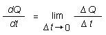

Definition. Suppose you have a quantity Q that depends on time. Let Q(t) denote the value of Q at time t.
At a later time t + Δt, the value of Q is Q(t + Δt). The change ΔQ in Q during the time interval Δt is
ΔQ =
Q(t + Δt) -
Q(t).  (1)
(1)
The time-rate-of-change of Q at time t is the limit of the ratio ΔQ / Δt as Δt goes to zero. This limit is denoted dQ / dt. Thus, the time rate of change of Q at time t is

The notation dQ / dt. This notation is just a short-hand for the limit above. Experimentally, you can think of this notation as describing a ratio of two small quantities, dQ and dt. Although a ratio of two small quantities is only an approximation of the limit, experimentally it is the best one can do.
The limit is possible only in the theoretical mathematical description. In mathematics, the limit is called the derivative of Q with respect to t. The symbol dQ / dt for the derivative can be a reminder that the derivative is approximately equal to the ratio of a very small dQ and the very small corresponding dt.
Example 1. Let s be the distance traveled by some object from some instant of time until time t. Then the time-rate-of-change of s at time t is the speed v at time t,
v = ds / dt .
Example 2. Let x be the x-coordinate of position for some object at time t. Then the time-rate-of-change of x at time t is the x-component of the velocity vx at time t,
vx = dx / dt .
Example 3. Let  be the
position vector of some object at time t. Then the
time-rate-of-change of at time
t is the velocity
be the
position vector of some object at time t. Then the
time-rate-of-change of at time
t is the velocity  at time t,
at time t,
=
d / dt
.
Example 4. Let be the velocity of some object at time t.
Then the time-rate-of-change of at time t is the acceleration  at time t,
at time t,
=
d / dt .